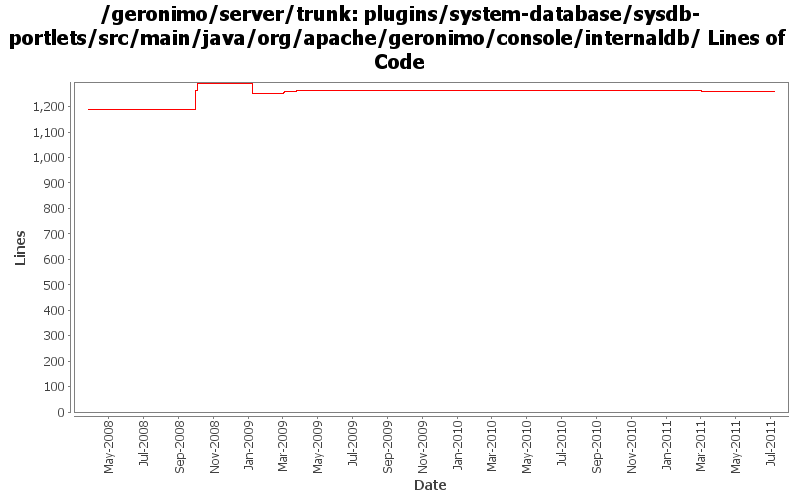

[root]/plugins/system-database/sysdb-portlets/src/main/java/org/apache/geronimo/console/internaldb

| Author | Changes | Lines of Code | Lines per Change |
|---|---|---|---|
| Totals | 32 (100.0%) | 278 (100.0%) | 8.6 |
| dwoods | 13 (40.6%) | 223 (80.2%) | 17.1 |
| rwonly | 2 (6.3%) | 21 (7.6%) | 10.5 |
| jbohn | 2 (6.3%) | 19 (6.8%) | 9.5 |
| gawor | 2 (6.3%) | 8 (2.9%) | 4.0 |
| jdillon | 10 (31.3%) | 6 (2.2%) | 0.6 |
| xuhaihong | 1 (3.1%) | 1 (0.4%) | 1.0 |
| vamsic007 | 2 (6.3%) | 0 (0.0%) | 0.0 |
GERONIMO-6058 Replace StringBuffer usage with StringBuilder
1 lines of code changed in 1 file:
GERONIMO-5830 SQL statements failed to be executed in 'Datasources' in admin console (thanks Fang Sheng Hao for the patch!)
19 lines of code changed in 1 file:
GERONIMO-5597 Reenable database-related admin console portlets (thanks Fang Sheng Hao for the patch!)
2 lines of code changed in 1 file:
GERONIMO-4597 Validate Web Admin Console input - fixes for CVE-2008-5518, CVE-2009-0038, and CVE-2009-0039
6 lines of code changed in 1 file:
GERONIMO-4507 Admin console should honor the priority of user agent's language setting - patch by Gang Yin
13 lines of code changed in 1 file:
restore auto commit setting (GERONIMO-4544)
1 lines of code changed in 1 file:
Do rollback in case of an exception. Based on patch from Ivan (GERONIMO-4544)
7 lines of code changed in 1 file:
GERONIMO-4484 Extraction, localization and display of messages generated in portlets. Applied common-message_fix.patch from Gang Yin.
12 lines of code changed in 1 file:
GERONIMO-4484 Extraction, localization and display of messages generated in portlets. Applied common-message-openejb.patch, common-message-activemq.patch, common-message-debugviews.patch, common-message-plancreator.patch and common-message-sysdb.patch from Gang Yin. Also updated 2 console-testsuite DB tests to match modified message strings.
54 lines of code changed in 2 files:
GERONIMO-4225 refactor patch to keep DB Manager -> Run SQL db centric while adding an init-param so we can also have a datasource centric DB Pools -> Run SQL instance from the same code
34 lines of code changed in 3 files:
GERONIMO-4225 Allow Run SQL portlet run sql against any configured data source. Thanks to Michal Borowiecki for the patch.
123 lines of code changed in 7 files:
More loggers back to static
3 lines of code changed in 3 files:
(GERONIMO-3985) Use SLF4J as the primary logging facade for Geronimo
3 lines of code changed in 7 files:
GERONIMO-3875 Enabling authentication for Derby renders DB Viewer portlet unusable for all db's except SystemDatabase
o Enables using DB portlet for databases with connection pools defined.
o Merging rev 641794 from branches\2.1
0 lines of code changed in 2 files: